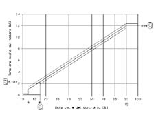

5040CD Check on climate control fan' speed control signal
- Path
- Test > 50 AUXILIARY UNITS > 5040 AIR CONDITIONING CASING AND COMPONENTS > 5040C air conditioner box and components > 5040CD Check on climate control fan' speed control signal
- Kind
- test / check procedure
- Applies to
- all engines; all production periods
- Interactive page
- https://sloeber94.github.io/elrnDB-lYpsln/en/#/2429804
Applies to: all engines; all production periods
With the Examiner set to voltmeter function, select 20 volts full scale deflection and time base 5 seconds.
Connect the black probe of the Examiner to the vehicle earth and the red probe to pin 2 of the speed regulator connector
Turn the ignition ON.
Press the START button.
The signal displayed must be a PWM pulse train with a Duty Cycle that varies as shown in the graph

Applies to: all engines; all production periods
Check that an earth signal is present on pin 3 of the regulator
Check that a PWM signal is present at pin 1 (diagnostic signal)
Check that the motor is correctly supplied via the regulator with a voltage signal at pins 5 and 6 as shown in the attached graph.